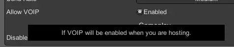
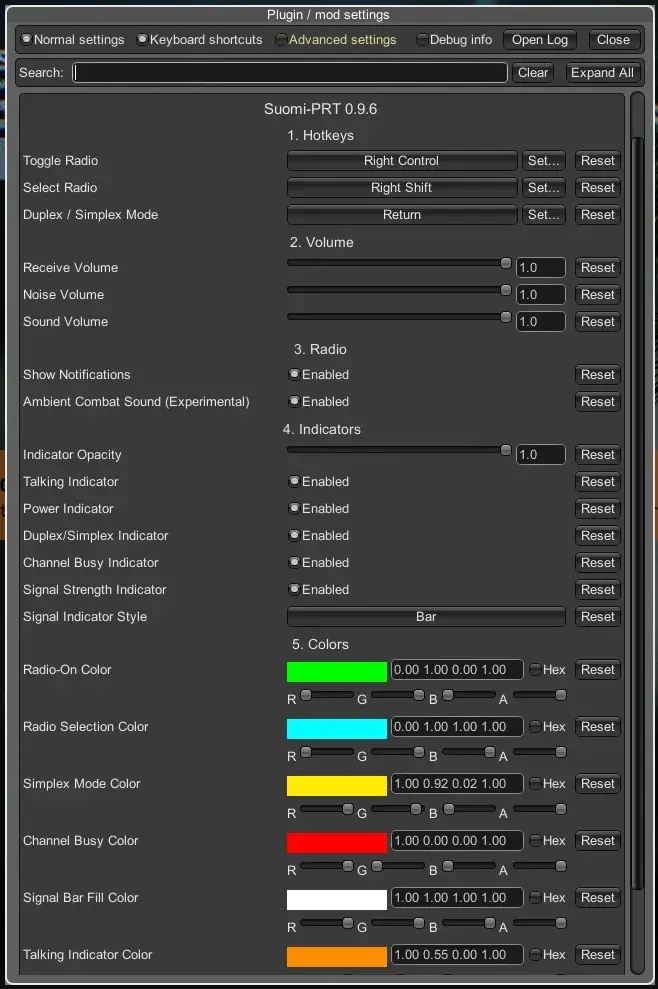

PRT - Portable Radio Transmitter (functional for Fika)
- Downloads
- 328
- Favourites
- 5
- Mod lists
- 6
The mod can work without the pre‑installed Fika Project mod. In that case, the radio interaction functionality is unavailable. Radios act as additional items that also spawn in locations and can be bought from traders. In addition, they can be placed in the Hall of Fame.
DO NOT FORGET TO ENABLE VOIP IN THE ESCAPE FROM TARKOV SETTINGS AND IN THE F12 FIKA SETTINGS MENU, OTHERWISE THE MOD WILL NOT WORK
Features
- A dozen or so radios, each with its own range, sound quality, and transmission character;
- Currently, radios are available for purchase and barter from traders at various loyalty levels;
- On‑screen status indicators in raid (radio on/off, transmit state, channel busy, half-duplex/duplex mode, signal strength) with customisation options;
- A dedicated notification overlay with simple configuration options;
Requirements
Installation
- Open the downloaded archive with 7zip (recommended)
- Locate the mod folder inside the 7zip archive
- Drag the selected folders into your SPT folder
Installation demonstration (many thanks to DrakiaXYZ for the demo):

Controls
The radio uses key combinations, and each of them includes the VOIP key. By default this is the “K” key. If you have a different one, use the key you assigned – the combinations below are based on the original:
Right Ctrl + K — turn the radio on/off;
Right Shift + K — switch to another radio (if you have several in valid slots);
Enter + K — toggle Half‑Duplex/Duplex* mode (while the radio is on);
Half‑Duplex is a transmission mode in which devices can exchange information in both directions, but only one at a time, not simultaneously
Duplex is a radio mode in which the device can both transmit and receive signals at the same time. Not all radios in the game support this mode (it will be indicated in the description).
Settings
DO NOT FORGET TO ENABLE VOIP IN THE ESCAPE FROM TARKOV SETTINGS AND IN THE F12 FIKA SETTINGS MENU, OTHERWISE THE MOD WILL NOT WORK
Enabling VOIP in FIKA settings

The mod settings are located in‑game in the F12 menu under Suomi-PRT ..* (see image below):

Known Issues
- When broadcasting inside buildings, sound quality degrades significantly due to the audio engine’s behaviour (currently unfixable);
- When switching a radio from an invalid slot to a valid one (e.g. from backpack to rig), it does not get selected automatically (we are working on this);
- While in raid, if you open the menu with the ESC key, the radio indicators remain visible (currently unfixable);
If you encounter any errors, please write in the comments or on Discord with a description of the issue and attach the logs:
\BepInEx\plugins\prt-fika\prt-fika.log
Credits
- Suomi handled the engine‑side work: sourcing and adapting 3D radio models, bundling them into Unity AssetBundles, reverse‑engineering EFT’s internal classes/APIs with dnSpy, finding and organising sound assets, extensive in‑game testing across multiple sessions, and designing the on‑screen status indicator system (layout, behaviour, style);
- makshepard provided guides, reference material, design feedback, and testing throughout development;
- Developed with the help of AI.
Version
0.9.7
What’s New in v0.9.7
Radios in the world
Radios can now be found as loot while exploring — not just bought from traders. Civilian radios (Baofeng, Kenwood TH-21BT, T460, Yaesu, DP4800, DP4601e, TRC-83, Alinco, Kenwood ProTalk XLS) spawn on Factory, Customs, Woods, Lighthouse, Shoreline, Interchange, Streets, and Ground Zero. Military radios (Azart, XTS5000, Harris, MTH800) spawn on Lighthouse, Reserve, Ground Zero, and Labs. Rarer radios are rarer to find, matching their trader price tier.
Works without Fika too
If Project Fika isn’t installed, radios automatically become collectible-only items (no voice functionality, since the client hard-depends on Fika) and can be displayed in the Hall of Fame instead. With Fika installed, everything works as normal. (Testing and feedback are needed.)
Full localization (8 languages)
Item names, descriptions, and on-screen notifications are now localized into Russian, English, German, Spanish, French, Polish, Italian, and Czech — auto-detected from your game’s language.
Fixed: Duplex mode terminology
The switchable mode on some radios was mislabeled “Simplex” — corrected to “Duplex” everywhere (item descriptions, on-screen notification, F12 menu) across all languages.
Fixed: Indicators showing over the in-raid settings menu
The on-screen status indicators no longer stay visible when you open the in-raid settings menu.
Misc
- Startup banner simplified (removed a few internal debug-style lines)
- Internal code cleanup
Dependencies
Version
0.9.6
Pre-release version